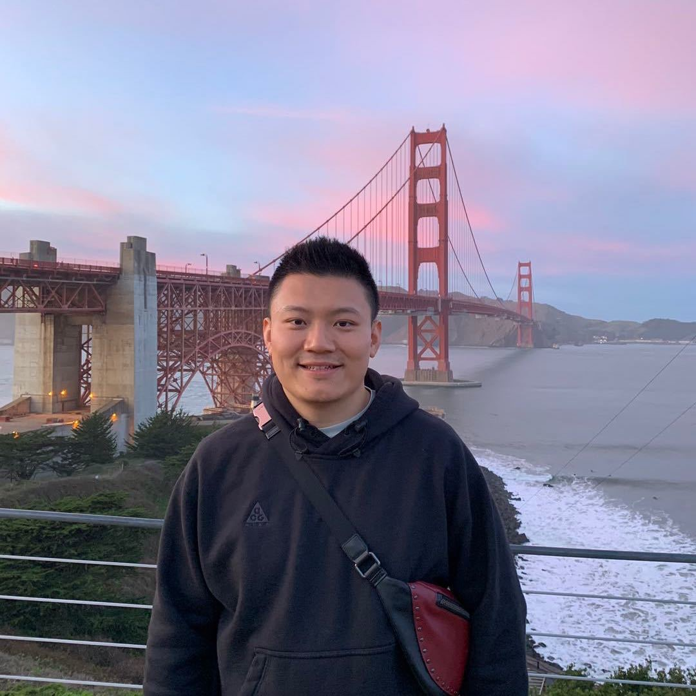

I'm a software developer with a background in insurance sales and I specialize in building full-stack web applications primarily with JavaScript, HTML/CSS, and MongoDB or MySQL. I studied at the University of Texas at Austin, where I earned my fullk-stack Web Development certification with high marks, and had the opportunity to create multiple projects and collaborate with team mates.
Since graduation, I've worked on personal projects to further strengthen my skills as a developer. When I'm not coding, you can find me keyaking on the Colorado River, gaming on my playStation, or cooking at home.
I look forward to hearing from you!